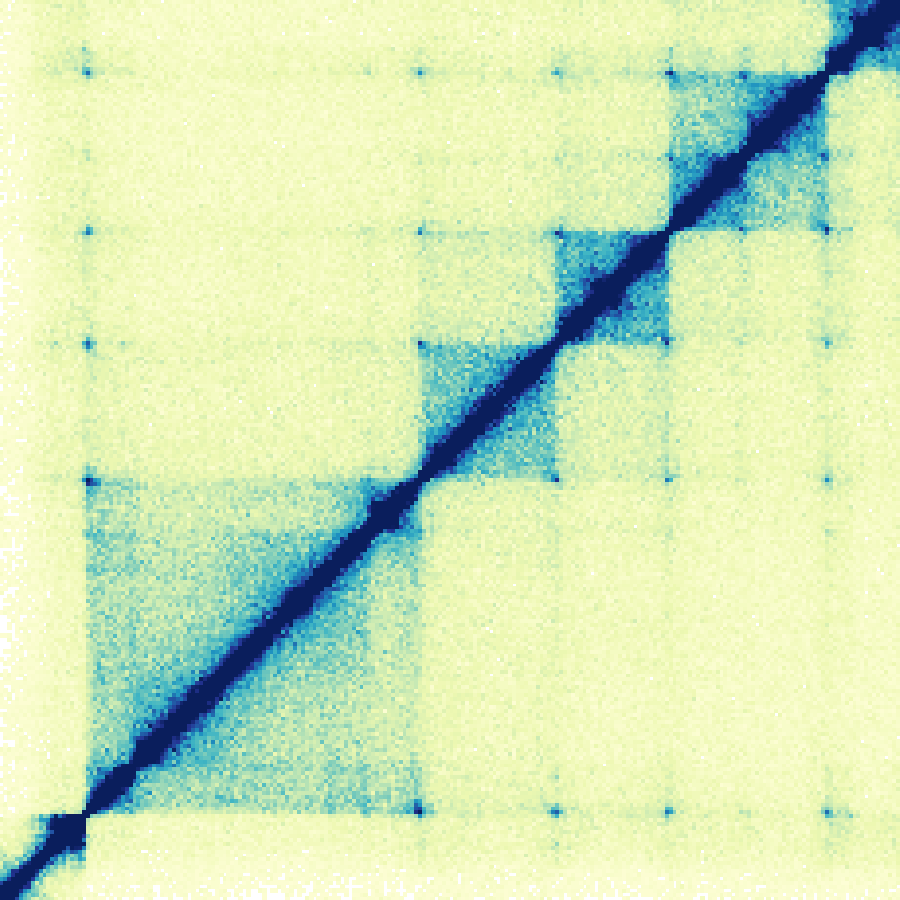
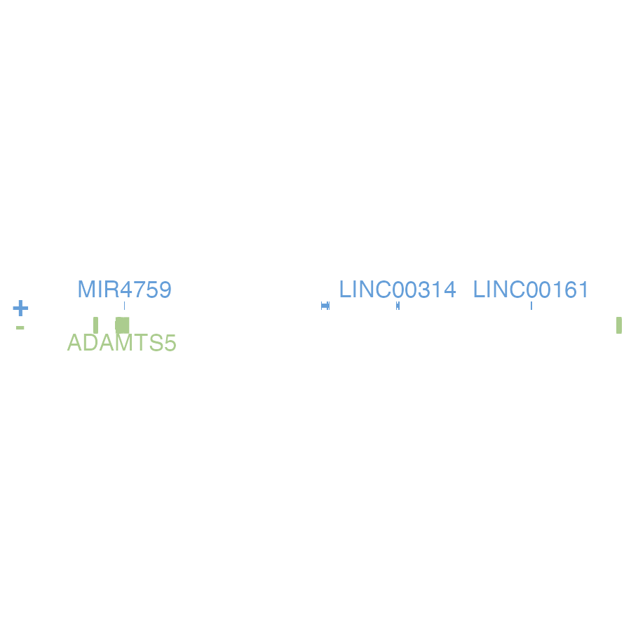
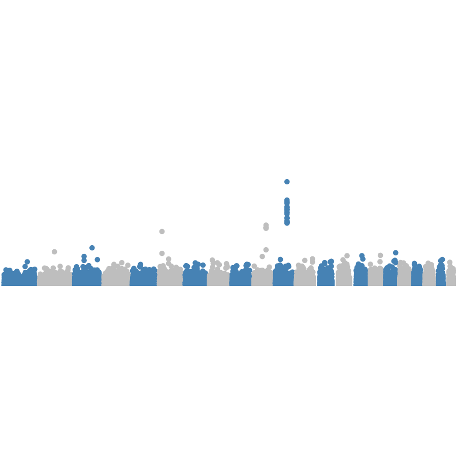
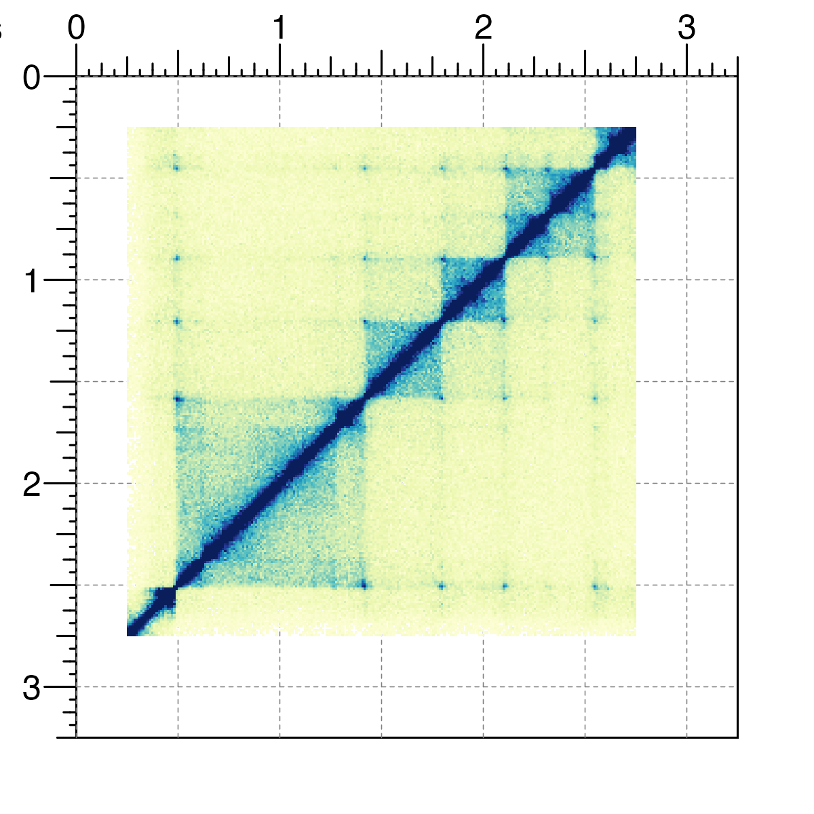
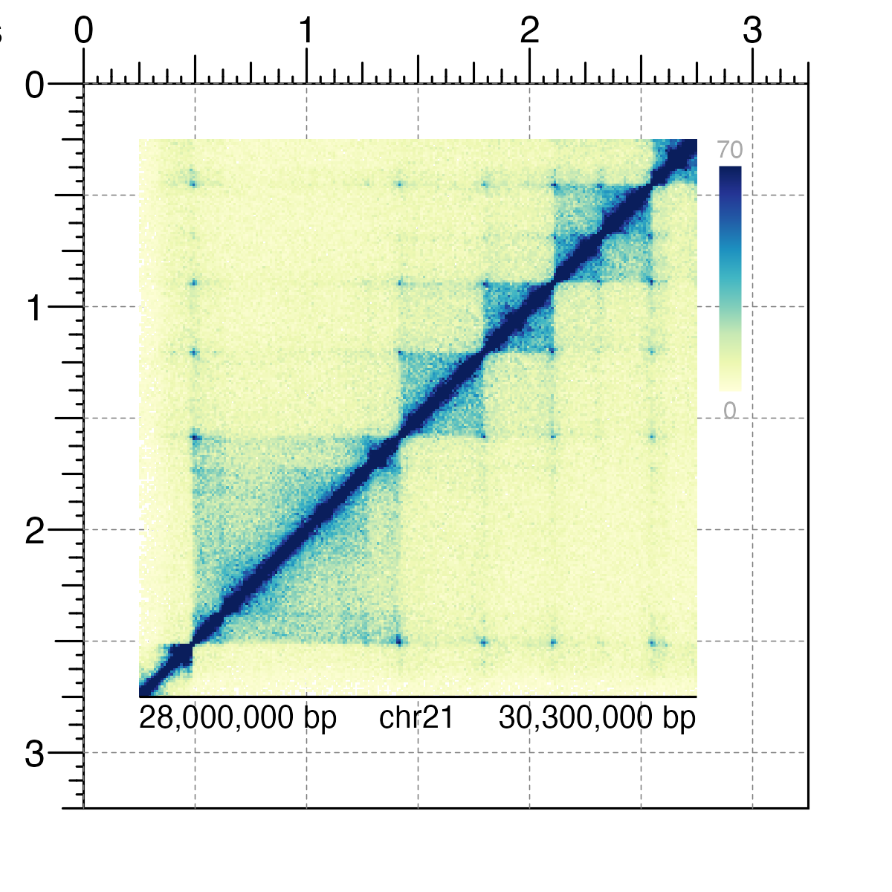

Introduction to BentoBox
Nicole Kramer, Eric S. Davis, Craig Wenger, Sarah Parker, Erika Deoudes, Douglas H. Phanstiel
2021-07-30
Source:vignettes/introduction_to_bentobox.Rmd
introduction_to_bentobox.RmdOverview

BentoBox is a coordinate-based, genomic visualization package for R. Using grid graphics, BentoBox empowers users to programatically and flexibly generate multi-panel figures. Tailored for genomics for a variety of genomic assemblies, BentoBox allows users to visualize large, complex genomic datasets while providing exquisite control over the arrangement of plots.
BentoBox functions can be grouped into the following categories:
- Page layout functions:
Functions for creating BentoBox page layouts, drawing, showing, and hiding guides, as well as placing plots on the page. See The BentoBox Page
- Reading functions:
Functions for quickly reading in large biological datasets. See Reading Data for BentoBox
- Plotting functions:
Contains genomic plotting functions, functions for placing ggplots and base plots, as well as functions for drawing simple shapes. See Plotting Multi-omic Data
- Annotation functions:
Enables users to add annotations to their plots, such as legends, axes, and scales. See Plot Annotations
- Meta functions:
Functions that display BentoBox properties or operate on other BentoBox functions, or constructors for BentoBox objects. See BentoBox Meta Functions
This vignette provides a quick start guide for utilizing BentoBox. For in-depth demonstrations of BentoBox’s key features, see the additional articles. For detailed usage of each function, see the function-specific reference examples with ?function() (e.g. ?bbPlotPairs()).
All the data included in this vignette can be found in the supplementary package BentoBoxData.
Quick plotting
BentoBox plotting functions contain 4 types of arguments:
Data reading argument (
data)Genomic locus arguments (
chrom,chromstart,chromend,assembly)Placement arguments (
x,y,width,height,just,default.units, …) that define where each plot resides on abbPageAttribute arguments that affect the data being plotted or the style of the plot (
norm,fill,fontcolor, …) that vary between functions
The quickest way to plot data is to omit the placement arguments. This will generate a BentoBox plot that fills up the entire graphics window and cannot be annotated. These plots are only meant to be used for quick genomic data inspection and not as final BentoBox plots. The only arguments that are required are the data arguments and locus arguments. The examples below show how to quickly plot different types of genomic data with plot defaults and included data types. To use your own data, replace the data argument with either a path to the file or an R object as described above.
Hi-C matrices
## Load BentoBox
library(BentoBox)
## Load example Hi-C data
library(BentoBoxData)
data("IMR90_HiC_10kb")
## Quick plot Hi-C data
bbPlotHicSquare(
data = IMR90_HiC_10kb,
chrom = "chr21", chromstart = 28000000, chromend = 30300000,
assembly = "hg19"
)
Signal tracks
## Load BentoBox
library(BentoBox)
## Load example signal data
library(BentoBoxData)
data("IMR90_ChIP_H3K27ac_signal")
## Quick plot signal data
bbPlotSignal(
data = IMR90_ChIP_H3K27ac_signal,
chrom = "chr21", chromstart = 28000000, chromend = 30300000,
assembly = "hg19"
)
Gene tracks
## Load BentoBox
library(BentoBox)
## Load hg19 genomic annotation packages
library(TxDb.Hsapiens.UCSC.hg19.knownGene)
library(org.Hs.eg.db)
## Quick plot genes
bbPlotGenes(
assembly = "hg19",
chrom = "chr21", chromstart = 28000000, chromend = 30300000
)
GWAS Manhattan plots
## Load BentoBox
library(BentoBox)
## Load hg19 genomic annotation packages
library(TxDb.Hsapiens.UCSC.hg19.knownGene)
## Load example GWAS data
library(BentoBoxData)
data("hg19_insulin_GWAS")
## Quick plot GWAS data
bbPlotManhattan(
data = hg19_insulin_GWAS,
assembly = "hg19",
fill = c("steel blue", "grey"),
ymax = 1.1, cex = 0.20
)
Plotting and annotating on the BentoBox page
To build complex, multi-panel BentoBox figures with annotations, we must:
- Create a
BentoBoxcoordinate page withbbPageCreate().
bbPageCreate(width = 3.25, height = 3.25, default.units = "inches")
- Provide values for the placement arguments (
x,y,width,height,just,default.units) in plotting functions and save the output of the plotting function.
data("IMR90_HiC_10kb")
hicPlot <- bbPlotHicSquare(
data = IMR90_HiC_10kb,
chrom = "chr21", chromstart = 28000000, chromend = 30300000,
assembly = "hg19",
x = 0.25, y = 0.25, width = 2.5, height = 2.5, default.units = "inches"
)
- Annotate
BentoBoxplot objects by passing them into theplotargument of annotation functions.
bbAnnoHeatmapLegend(
plot = hicPlot,
x = 2.85, y = 0.25, width = 0.1, height = 1.25, default.units = "inches"
)
bbAnnoGenomeLabel(
plot = hicPlot,
x = 0.25, y = 2.75, width = 2.5, height = 0.25, default.units = "inches"
)
For more information about how to place plots and annotations on a BentoBox page, check out the section Working with plot objects.
Exporting plots
When a BentoBox plot is ready to be saved and exported, we can first remove all page guides that were made with bbPageCreate():

We can then either use the Export toggle in the RStudio plot panel, or save the plot within our R code as follows:
pdf(width = 3.25, height = 3.25)
bbPageCreate(width = 3.25, height = 3.25, default.units = "inches")
data("IMR90_HiC_10kb")
hicPlot <- bbPlotHicSquare(
data = IMR90_HiC_10kb,
chrom = "chr21", chromstart = 28000000, chromend = 30300000,
assembly = "hg19",
x = 0.25, y = 0.25, width = 2.5, height = 2.5, default.units = "inches"
)
bbAnnoHeatmapLegend(
plot = hicPlot,
x = 2.85, y = 0.25, width = 0.1, height = 1.25, default.units = "inches"
)
bbAnnoGenomeLabel(
plot = hicPlot,
x = 0.25, y = 2.75, width = 2.5, height = 0.25, default.units = "inches"
)
bbPageGuideHide()
dev.off()For more detailed usage and examples, please refer to the other available vignettes.
Future Directions
We still have many ideas to add for a second version of BentoBox including, but not limited to: grammar of graphics style plot arguments and plot building, templates, themes, and multi-plotting functions. If you have suggestions for ways we can improve BentoBox, please let us know!
Session Info
sessionInfo()
#> R version 4.1.0 (2021-05-18)
#> Platform: x86_64-apple-darwin17.0 (64-bit)
#> Running under: macOS Big Sur 10.16
#>
#> Matrix products: default
#> BLAS: /Library/Frameworks/R.framework/Versions/4.1/Resources/lib/libRblas.dylib
#> LAPACK: /Library/Frameworks/R.framework/Versions/4.1/Resources/lib/libRlapack.dylib
#>
#> locale:
#> [1] en_US.UTF-8/en_US.UTF-8/en_US.UTF-8/C/en_US.UTF-8/en_US.UTF-8
#>
#> attached base packages:
#> [1] stats4 parallel grid stats graphics grDevices utils
#> [8] datasets methods base
#>
#> other attached packages:
#> [1] org.Hs.eg.db_3.13.0
#> [2] TxDb.Hsapiens.UCSC.hg19.knownGene_3.2.2
#> [3] GenomicFeatures_1.44.0
#> [4] AnnotationDbi_1.54.1
#> [5] Biobase_2.52.0
#> [6] GenomicRanges_1.44.0
#> [7] GenomeInfoDb_1.28.1
#> [8] IRanges_2.26.0
#> [9] S4Vectors_0.30.0
#> [10] BiocGenerics_0.38.0
#> [11] BentoBoxData_0.99.0
#> [12] BentoBox_0.99.6
#>
#> loaded via a namespace (and not attached):
#> [1] bitops_1.0-7 matrixStats_0.60.0
#> [3] fs_1.5.0 bit64_4.0.5
#> [5] filelock_1.0.2 progress_1.2.2
#> [7] httr_1.4.2 RColorBrewer_1.1-2
#> [9] rprojroot_2.0.2 tools_4.1.0
#> [11] bslib_0.2.5.1 utf8_1.2.2
#> [13] R6_2.5.0 DBI_1.1.1
#> [15] colorspace_2.0-2 prettyunits_1.1.1
#> [17] tidyselect_1.1.1 bit_4.0.4
#> [19] curl_4.3.2 compiler_4.1.0
#> [21] textshaping_0.3.5 xml2_1.3.2
#> [23] desc_1.3.0 DelayedArray_0.18.0
#> [25] rtracklayer_1.52.0 sass_0.4.0
#> [27] scales_1.1.1 rappdirs_0.3.3
#> [29] pkgdown_1.6.1 systemfonts_1.0.2
#> [31] stringr_1.4.0 digest_0.6.27
#> [33] Rsamtools_2.8.0 rmarkdown_2.9
#> [35] XVector_0.32.0 pkgconfig_2.0.3
#> [37] htmltools_0.5.1.1 MatrixGenerics_1.4.0
#> [39] dbplyr_2.1.1 fastmap_1.1.0
#> [41] highr_0.9 rlang_0.4.11
#> [43] RSQLite_2.2.7 gridGraphics_0.5-1
#> [45] jquerylib_0.1.4 BiocIO_1.2.0
#> [47] generics_0.1.0 jsonlite_1.7.2
#> [49] BiocParallel_1.26.1 dplyr_1.0.7
#> [51] RCurl_1.98-1.3 magrittr_2.0.1
#> [53] ggplotify_0.0.7 GenomeInfoDbData_1.2.6
#> [55] Matrix_1.3-4 Rcpp_1.0.7
#> [57] munsell_0.5.0 fansi_0.5.0
#> [59] lifecycle_1.0.0 stringi_1.7.3
#> [61] yaml_2.2.1 SummarizedExperiment_1.22.0
#> [63] zlibbioc_1.38.0 BiocFileCache_2.0.0
#> [65] blob_1.2.2 crayon_1.4.1
#> [67] lattice_0.20-44 Biostrings_2.60.1
#> [69] hms_1.1.0 KEGGREST_1.32.0
#> [71] knitr_1.33 pillar_1.6.2
#> [73] rjson_0.2.20 biomaRt_2.48.2
#> [75] strawr_0.0.8 XML_3.99-0.6
#> [77] glue_1.4.2 evaluate_0.14
#> [79] data.table_1.14.0 BiocManager_1.30.16
#> [81] png_0.1-7 vctrs_0.3.8
#> [83] gtable_0.3.0 purrr_0.3.4
#> [85] assertthat_0.2.1 cachem_1.0.5
#> [87] ggplot2_3.3.5 xfun_0.24
#> [89] restfulr_0.0.13 ragg_1.1.3
#> [91] tibble_3.1.3 rvcheck_0.1.8
#> [93] GenomicAlignments_1.28.0 plyranges_1.12.1
#> [95] memoise_2.0.0 ellipsis_0.3.2